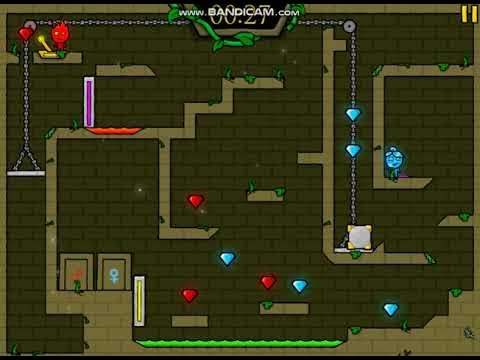
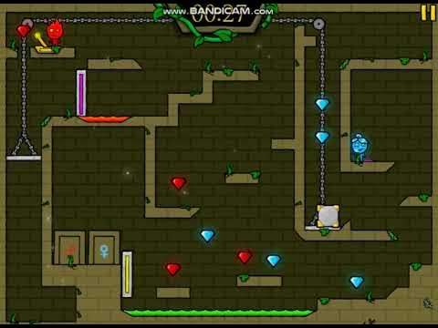

CREADOR
Oslo Albet dijo que desarrolló Fireboy y Watergirl porque "siempre había encontrado fascinantes los juegos de rompecabezas". Finalizó la mecánica del juego antes de crear los personajes porque estaba más interesado en el juego.
Fireboy and Watergirl es una serie de videojuegos de plataformas de rompecabezas creada por el desarrollador de juegos independiente Oslo Albet en 2009. Los primeros cinco juegos de la serie se lanzaron en la ahora desaparecida plataforma de software Adobe Flash, pero aún se pueden jugar en el portal web en línea Cool Math Games, ya que se convirtieron a HTML5. Fireboy se puede mover usando las teclas de flecha y Watergirl se puede mover usando las teclas WAD. Fireboy solo puede atravesar el fuego, mientras que Watergirl solo puede atravesar el agua.
Oslo Albet dijo que desarrolló Fireboy y Watergirl porque "siempre había encontrado fascinantes los juegos de rompecabezas". Finalizó la mecánica del juego antes de crear los personajes porque estaba más interesado en el juego.
En junio de 2019, se rumoreaba que Cool Math Games cerraría ya que Adobe Flash se descontinuaría en 2020, pero la compañía confirmó que continuarían operando y los juegos Flash como Fireboy y Watergirl se convirtieron posteriormente a HTML5
GamerBolt elogió el ritmo del juego al afirmar que los niveles introductorios "demasiado fáciles" no tardaron mucho en completarse antes de que el juego se volviera más desafiante. Afirmaron que el juego estaba "extremadamente bien ejecutado" y que había una "cantidad decente de niveles", lo que significaba que el juego potencialmente tenía varias horas de juego.
 
